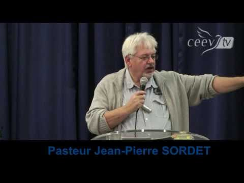

Qui sommes-nous?
Les Célébrations de l’Evangile sont des événements mensuels organisés par Le Refuge, église d'Enhaut, qui est membre du (Bulle network). Nous créons ensemble un espace multiculturel et dynamique pour manifester la présence de Dieu en faveur de ceux qui le recherchent ou qui le connaissent déjà.
En plus de ces célébrations mensuelles, nous nous réunissons en groupe de maison tous les mardis soirs à 20:15 à Flendruz.
Notre mission : Nous faisons connaître la puissance libératrice de Jésus-Christ dans le Pays d’en-Haut vaudois et l’Oberland bernois.
Notre historique dans la région : Nos activités ont démarré il y a plusieurs dizaines d’années par la création d'un groupe de prières chez Andrée Eggen à Flendruz sous la houlette du pasteur Michel Renevier. Ce groupe a su persévérer jusqu’à ce jour. Aujourd’hui, nous travaillons à une nouvelle saison de développement en démarrant une nouvelle communauté nommée: Le Refuge église d'Enhaut. Notre vision à terme est la croissance d'une église vivante dans cette magnifique région.
Notre équipe : Nos activités sont au bénéfice de l'équipe de ministères du Bulle network. Nous avons la joie d’avoir sur place un couple membre de notre équipe : le pasteur Jean-Pierre Sordet et son épouse Evelyne. Jean-Pierre est en âge de la retraite, mais pas dans le ministère ! Son soutien, avec celui aussi de son épouse, sont très précieux au développement de l’église.
Notre appartenance : Notre église au pays-d'Enhaut, au travers du Bulle Network, est membre des Eglises Evangéliques Apostoliques Romandes (www.eear.ch) et appartient au Réseau Evangélique Suisse (www.evangelique.ch).
Nos activités

Groupe de maison à Flendruz – Tous les mardis soirs 20:00 – Garage du Vanil chez Andrée Eggen
Célébrations de l’Evangile – Tous les 1er dimanches du mois – Dans une salle publique du Pays-d'Enhaut (voir annonce).
Contact
Pour plus d’informations, vous pouvez nous contacter à l’adresse suivante : rougemont@eebulle.ch